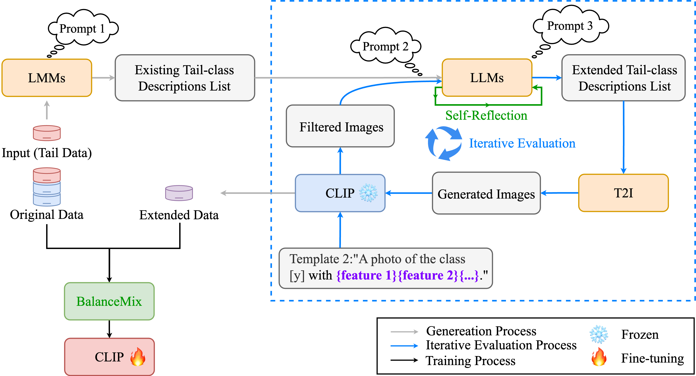

Framework
LTGC first employs LMMs to analyze the existing tail data to obtain the existing tail-class descriptions list. Then it inputs the list into LLMs to analyze the absent features of the tail classes and employs the T2I model to generate diverse images. Moreover, our designed self-reflection and iterative evaluation modules ensure the diversity and quality of the tail data. Finally, LTGC employs the BalanceMix module to fine-tune the CLIP’s visual encoder with the extended and original data.
